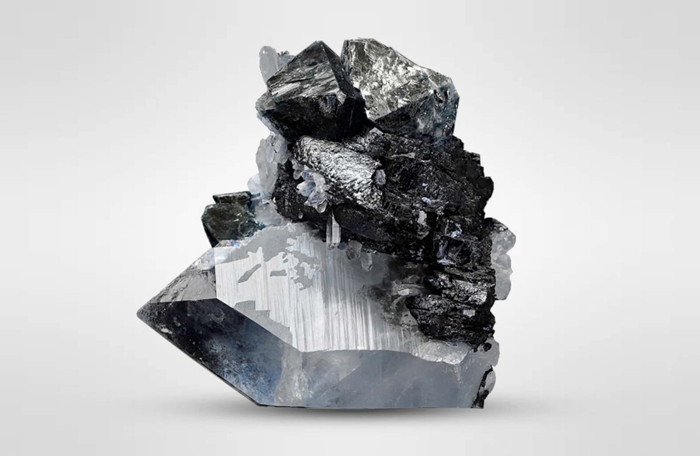

| Property |
Value |
| Element Name |
Tungsten |
| Symbol |
W |
| Main Characteristics |
- Metallic chemical element.
- Very hard and heavy.
- Scientists are studying its properties.
- Has a very high melting point, requiring extreme heat to become liquid.
|
| Where It Is Found |
Exists in the Earth's crust and is extracted from rocks. |
| Uses |
- Its high resistance and melting point make it very useful.
- Used in light bulb filaments.
- Used to produce strong alloys, which are mixtures of metals.
|
| Research |
Scientists are continuing to find new ways to utilize its unique properties. |
